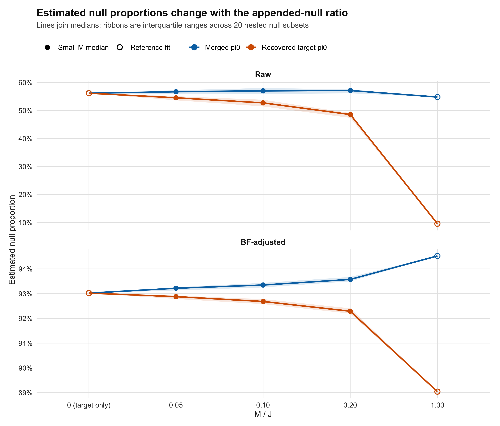
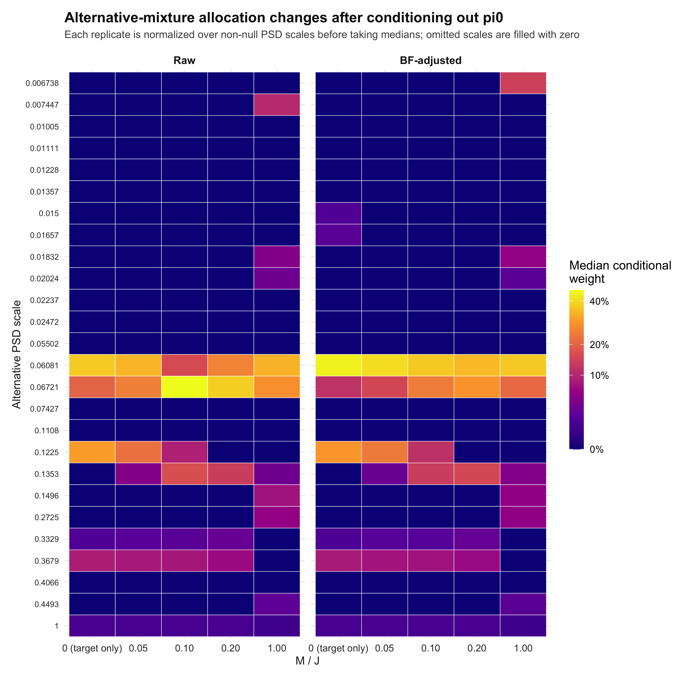
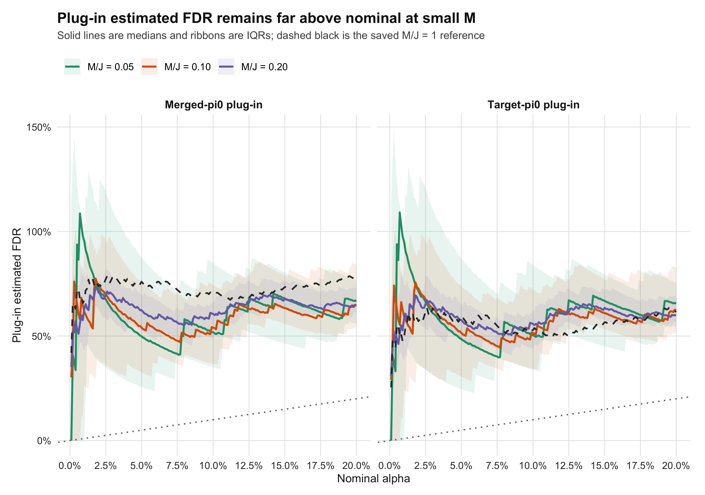
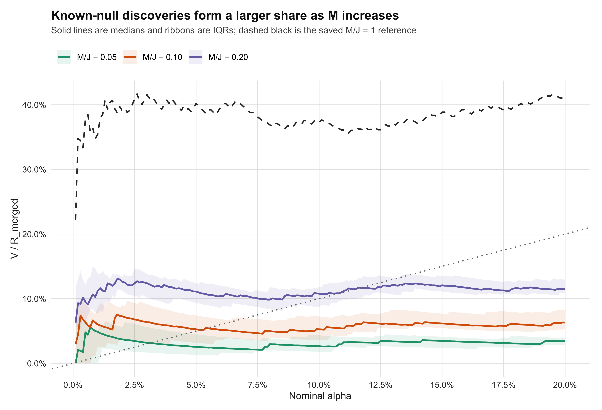

Last updated: 2026-08-19
Checks: 6 1
Knit directory: coderepo-local/
This reproducible R Markdown analysis was created with workflowr (version 1.7.2). The Checks tab describes the reproducibility checks that were applied when the results were created. The Past versions tab lists the development history.
The R Markdown is untracked by Git. To know which version of the R
Markdown file created these results, you’ll want to first commit it to
the Git repo. If you’re still working on the analysis, you can ignore
this warning. When you’re finished, you can run
wflow_publish to commit the R Markdown file and build the
HTML.
Great job! The global environment was empty. Objects defined in the global environment can affect the analysis in your R Markdown file in unknown ways. For reproduciblity it’s best to always run the code in an empty environment.
The command set.seed(20251109) was run prior to running
the code in the R Markdown file. Setting a seed ensures that any results
that rely on randomness, e.g. subsampling or permutations, are
reproducible.
Great job! Recording the operating system, R version, and package versions is critical for reproducibility.
Nice! There were no cached chunks for this analysis, so you can be confident that you successfully produced the results during this run.
Great job! Using relative paths to the files within your workflowr project makes it easier to run your code on other machines.
Great! You are using Git for version control. Tracking code development and connecting the code version to the results is critical for reproducibility.
The results in this page were generated with repository version c87957a. See the Past versions tab to see a history of the changes made to the R Markdown and HTML files.
Note that you need to be careful to ensure that all relevant files for
the analysis have been committed to Git prior to generating the results
(you can use wflow_publish or
wflow_git_commit). workflowr only checks the R Markdown
file, but you know if there are other scripts or data files that it
depends on. Below is the status of the Git repository when the results
were generated:
Ignored files:
Ignored: .DS_Store
Ignored: .Rhistory
Ignored: .Rproj.user/
Ignored: Rplots.pdf
Ignored: analysis/.DS_Store
Ignored: analysis/.Rhistory
Ignored: code/.DS_Store
Ignored: code/.Rhistory
Ignored: code/revision_simulations/.DS_Store
Ignored: data/appendixB/
Ignored: data/dynamic_eQTL_real/
Ignored: data/revision_simulations/
Ignored: data/toy_example/
Ignored: output/dynamic_eQTL_real/
Ignored: output/pdf/
Ignored: output/playwright/
Ignored: output/revision_simulations/
Untracked files:
Untracked: analysis/revision_internal_fash_cl_manuscript_impact.rmd
Untracked: analysis/revision_internal_fash_discovery_variant_count.rmd
Untracked: analysis/revision_internal_fash_linear_real_data_ablation.rmd
Untracked: analysis/revision_internal_fashr_correlated_observation_model.rmd
Untracked: analysis/revision_internal_r1_normality_assumption.rmd
Untracked: analysis/revision_internal_small_m_matched_null_eb_sensitivity.rmd
Untracked: analysis/revision_internal_twenty_variant_per_gene_refit.rmd
Untracked: apps/
Untracked: code/revision_simulations/internal/covariance_estimation/run_design_propagated_null_correlation.R
Untracked: code/revision_simulations/internal/covariance_estimation/run_multigene_null_beta_covariance_exploration.R
Untracked: code/revision_simulations/internal/early_window_sensitivity/
Untracked: code/revision_simulations/internal/fash_cl_manuscript_impact/
Untracked: code/revision_simulations/internal/fash_discovery_variant_count/
Untracked: code/revision_simulations/internal/fash_linear_real_data_ablation/
Untracked: code/revision_simulations/internal/r1_known_truth_genotype_permutation/
Untracked: code/revision_simulations/internal/r1_normality_assumption/
Untracked: code/revision_simulations/internal/selected_signal_genotype_permutation/
Untracked: code/revision_simulations/r5_one_variant_per_gene/
Untracked: code/revision_simulations/shared/build_real_genotype_one_per_gene_cache.R
Untracked: code/revision_simulations/shared/real_genotype_one_per_gene.R
Untracked: code/revision_simulations/shared/test_linear_mixture_fash.R
Untracked: code/revision_simulations/shared/test_real_genotype_one_per_gene.R
Untracked: code/revision_simulations/shared/validate_r1_r2_linear_mixture_pairing.R
Untracked: code/revision_simulations/shared/validate_r1_r2_real_genotype_pairing.R
Unstaged changes:
Modified: analysis/dynamic_eQTL_real.rmd
Modified: analysis/index.Rmd
Modified: analysis/revision_balanced_variant_thinning.rmd
Modified: analysis/revision_combined_spiky_genotype_simulation.rmd
Modified: analysis/revision_functional_testing_simulation.rmd
Modified: analysis/revision_genotype_level_simulation.rmd
Modified: code/revision_simulations/README.md
Modified: code/revision_simulations/internal/covariance_estimation/run_global_pca_factor_visualization.R
Modified: code/revision_simulations/r1_random_bspline/reporting.R
Modified: code/revision_simulations/r1_random_bspline/run_random_bspline_mc_replication.R
Modified: code/revision_simulations/r2_spiky_transient/reporting.R
Modified: code/revision_simulations/r2_spiky_transient/run_combined_spiky_genotype_simulation.R
Modified: code/revision_simulations/r2_spiky_transient/run_spiky_transient_mc_replication.R
Modified: code/revision_simulations/r3_functional_testing/reporting.R
Modified: code/revision_simulations/r3_functional_testing/run_matched_functional_testing_mc_replication.R
Modified: code/revision_simulations/shared/simulation_functions.R
Note that any generated files, e.g. HTML, png, CSS, etc., are not included in this status report because it is ok for generated content to have uncommitted changes.
There are no past versions. Publish this analysis with
wflow_publish() to start tracking its development.
The original all-gene matched-null experiment appended one synchronized signal-stripped residual-permutation control for each of the 6,362 randomly sampled target gene–variant units, so that \(M=J\). This sensitivity analysis asks how the fitted empirical-Bayes mixture changes when only a small subset of the existing controls is appended.
The analysis reused cached likelihood rows, so no beta, SE, or likelihood was recomputed. The 60 small-M raw/BF refits plus validation took 56.8 seconds; the median raw-plus-BF fit itself took 0.340 seconds.
The 20 repetitions quantify null-row subsampling sensitivity within one fixed synchronized permutation. They are not 20 independent permutations. Because the permuted controls may carry alternative-like signal, \(V/R_{\mathrm{merged}}\) is labeled a known-null FDP lower-bound diagnostic rather than a formal FDP estimate, and the plug-in quantities below are not formal repeated-sampling FDR estimates.
For each merged fit, the target-null proportion is algebraically recovered as
\[ \widehat\pi_{0,T} = \frac{(J+M)\widehat\pi_{0,\mathrm{merged}}-M}{J}. \]
The BF-adjusted merged \(\widehat\pi_0\) rises only slightly as controls are added, from 0.9302 in the target-only fit to median values of approximately 0.9322, 0.9335, and 0.9357 at \(M/J=0.05,0.10,0.20\). In contrast, the recovered target \(\widehat\pi_0\) declines from 0.9302 to approximately 0.9288, 0.9268, and 0.9229. Thus the exact-null weight does not follow the ideal uncontaminated mixture identity as \(M\) increases.
plot_small_m_pi0()
Raw and BF-adjusted merged and recovered-target null-proportion estimates versus the appended-control ratio. Small-M points are medians with interquartile bands across 20 nested control subsets; M/J = 0 and 1 are single reference fits.
render_small_m_table(
small_m_pi0_summary_table,
align = "llrrr"
)| Stage | M / J | M | Merged pi0 | Recovered target pi0 |
|---|---|---|---|---|
| Raw | 0 (target only) | 0 | 0.5616 [0.5616, 0.5616] | 0.5616 [0.5616, 0.5616] |
| Raw | 0.05 | 318 | 0.5669 [0.5584, 0.5722] | 0.5453 [0.5363, 0.5509] |
| Raw | 0.10 | 636 | 0.5701 [0.5585, 0.5802] | 0.5271 [0.5144, 0.5383] |
| Raw | 0.20 | 1,272 | 0.5713 [0.5613, 0.5755] | 0.4855 [0.4736, 0.4906] |
| Raw | 1.00 | 6,362 | 0.5479 [0.5479, 0.5479] | 0.0958 [0.0958, 0.0958] |
| BF-adjusted | 0 (target only) | 0 | 0.9302 [0.9302, 0.9302] | 0.9302 [0.9302, 0.9302] |
| BF-adjusted | 0.05 | 318 | 0.9322 [0.9313, 0.9326] | 0.9288 [0.9279, 0.9292] |
| BF-adjusted | 0.10 | 636 | 0.9335 [0.9325, 0.9344] | 0.9268 [0.9258, 0.9278] |
| BF-adjusted | 0.20 | 1,272 | 0.9357 [0.9350, 0.9367] | 0.9229 [0.9219, 0.9241] |
| BF-adjusted | 1.00 | 6,362 | 0.9452 [0.9452, 0.9452] | 0.8904 [0.8904, 0.8904] |
The next plot removes the total exact-null mass and, within every refit, renormalizes the remaining PSD-scale weights to sum to one before taking component-wise medians. It therefore isolates changes in the learned alternative mixture from changes in \(\widehat\pi_0\). A missing scale in a particular fit means its fitted weight is zero.
plot_small_m_alternative_weights()
Median empirical-Bayes mixture weight at each non-null PSD scale after conditioning on the alternative component. Columns are target-only, three small-M ratios, and the full M/J = 1 reference.
render_small_m_table(
small_m_alternative_summary_table,
align = "llrr"
)| Stage | M / J | Alternative mass | Conditional mean PSD |
|---|---|---|---|
| Raw | 0 (target only) | 43.84% [43.84%, 43.84%] | 0.1236 [0.1236, 0.1236] |
| Raw | 0.05 | 43.31% [42.78%, 44.16%] | 0.1219 [0.1197, 0.1233] |
| Raw | 0.10 | 42.99% [41.98%, 44.15%] | 0.1201 [0.1173, 0.1224] |
| Raw | 0.20 | 42.87% [42.45%, 43.87%] | 0.1155 [0.1137, 0.1171] |
| Raw | 1.00 | 45.21% [45.21%, 45.21%] | 0.0921 [0.0921, 0.0921] |
| BF-adjusted | 0 (target only) | 6.98% [6.98%, 6.98%] | 0.1186 [0.1186, 0.1186] |
| BF-adjusted | 0.05 | 6.78% [6.74%, 6.87%] | 0.1179 [0.1150, 0.1192] |
| BF-adjusted | 0.10 | 6.65% [6.56%, 6.75%] | 0.1168 [0.1129, 0.1185] |
| BF-adjusted | 0.20 | 6.43% [6.33%, 6.50%] | 0.1122 [0.1087, 0.1136] |
| BF-adjusted | 1.00 | 5.48% [5.48%, 5.48%] | 0.0874 [0.0874, 0.0874] |
The redistribution across non-null PSD scales shows that appended controls do more than change the scalar null weight: they also change the shape of the learned alternative prior. Consequently, a small difference in \(\widehat\pi_0\) alone is not evidence that target lfdr values are unaffected. Some individual changes exchange weight between neighboring PSD scales, but a coarser summary moves in the same direction: the BF-adjusted conditional mean PSD declines from 0.1186 in the target-only fit to medians of 0.1179, 0.1168, and 0.1122 at the three small-M ratios, and to 0.0874 at \(M/J=1\).
For each small-M ratio, entries are median [first quartile, third quartile] across the 20 nested subsets. The \(M/J=1\) row is the single saved reference.
render_small_m_table(
small_m_alpha005_table,
align = "lrrrrrrrr"
)| M / J | M | Merged pi0 | Recovered target pi0 | Target calls | Control calls V | V / R_merged | Target-pi0 plug-in FDR | Merged-pi0 plug-in FDR |
|---|---|---|---|---|---|---|---|---|
| 0.05 | 318 | 0.932 [0.931, 0.933] | 0.929 [0.928, 0.929] | 76 [75, 77] | 2 [1, 4] | 2.55% [1.32%, 4.47%] | 48.6% [24.8%, 86.9%] | 49.9% [25.8%, 87.5%] |
| 0.10 | 636 | 0.933 [0.933, 0.934] | 0.927 [0.926, 0.928] | 75 [74, 76] | 4 [2, 6] | 5.26% [3.20%, 7.41%] | 51.5% [30.7%, 74.2%] | 54.1% [32.9%, 76.1%] |
| 0.20 | 1,272 | 0.936 [0.935, 0.937] | 0.923 [0.922, 0.924] | 72 [71, 72] | 9 [7, 10] | 11.11% [9.35%, 12.37%] | 57.7% [47.6%, 65.2%] | 62.4% [52.5%, 69.5%] |
| 1.00 reference | 6,362 | 0.945 | 0.890 | 58 | 39 | 40.21% | 59.9% | 76.0% |
At nominal \(\alpha=0.05\), median \(V/R_{\mathrm{merged}}\) is 2.55%, 5.26%, and 11.11% for the three small-M ratios, compared with 40.21% for the saved \(M/J=1\) reference. The increase with \(M\) is expected because a larger synthetic-control pool can contribute more selected controls to the merged discovery set. Median target-\(\pi_0\) plug-in FDR diagnostics are 48.6%, 51.5%, and 57.7%; the merged-\(\pi_0\) versions are 49.9%, 54.1%, and 62.4%.
The \(M/J=0.05\) diagnostic is especially discrete: the median number of selected controls is only two, with an interquartile range from one to slightly above three. Individual plug-in estimates can exceed one; this reflects the instability of the scaled diagnostic with a small \(M\) and a small target-call denominator, not an FDR probability above 100%.
The two diagnostics are
\[ \widehat{\mathrm{FDR}}_T = \widehat\pi_{0,T} \frac{V/M}{R_T/J}, \qquad \widehat{\mathrm{FDR}}_{\mathrm{merged}} = \widehat\pi_{0,\mathrm{merged}} \frac{V/M}{R_{\mathrm{merged}}/(J+M)}. \]
These plug-in formulas still use \(V/M\) as the estimated null selection probability. This is distinct from the direct known-null FDP lower-bound diagnostic \(V/R_{\mathrm{merged}}\).
plot_small_m_plugin_fdr()
BF-adjusted plug-in FDR diagnostics versus nominal alpha for the three small-M ratios. Solid lines are medians, ribbons are interquartile ranges, and the dashed black curve is the saved M/J = 1 reference.
Reducing \(M\) does not restore an approximately nominal plug-in curve. It reduces the influence of the appended controls on each individual EB fit, but the resulting diagnostic becomes noisier because only a few controls are selected.
plot_small_m_known_null_fdp()
BF-adjusted known-null FDP lower-bound diagnostic V/R_merged versus nominal alpha. These fixed-permutation controls may be signal-contaminated, so the curve is not a formal FDP estimate.
The direct diagnostic asks what fraction of all merged discoveries came from the appended controls. If every appended control were a valid known null, it would be a lower bound on the merged FDP because false target discoveries are not counted in \(V\). Signal leakage weakens that known-null interpretation in this real-data permutation experiment.
provenance_display <- small_m_input_provenance
provenance_display$size_bytes <- format_integer(provenance_display$size_bytes)
names(provenance_display) <- c(
"Role", "Path", "Bytes", "Modified (UTC)", "MD5"
)
render_small_m_table(
provenance_display,
align = "llrll"
)| Role | Path | Bytes | Modified (UTC) | MD5 |
|---|---|---|---|---|
| full_merged_fit | /Users/ziangzhang/Desktop/FASH/fash-revision/coderepo-local/output/revision_simulations/internal/all_gene_random_variant_signal_stripped_residual_block_permutation_selection20260817_seed20260811/merged_fash_fit.rds | 22,615,458 | 2026-08-18 06:11:07 UTC | da9855aa69b8fffe7f9f8cd25c2714c1 |
| full_calibration | /Users/ziangzhang/Desktop/FASH/fash-revision/coderepo-local/output/revision_simulations/internal/all_gene_random_variant_signal_stripped_residual_block_permutation_selection20260817_seed20260811/calibration_diagnostics.csv | 946 | 2026-08-18 06:11:08 UTC | 03fdefbb6b90dd7c5d4c45c3f5d90ffb |
| target_selection | /Users/ziangzhang/Desktop/FASH/fash-revision/coderepo-local/output/revision_simulations/internal/all_gene_random_variant_signal_stripped_residual_block_permutation_selection20260817_seed20260811/selection.csv | 626,736 | 2026-08-18 06:11:08 UTC | 23b9db0285fbffd7ec6b3c766fa8f71c |
| clean_session_null_likelihood_fit | /Users/ziangzhang/Desktop/FASH/fash-revision/coderepo-local/output/revision_simulations/internal/all_gene_random_variant_signal_stripped_residual_null_fit_selection20260817_seed20260811.rds | 5,582,366 | 2026-08-18 06:09:58 UTC | e8100b5086c4759e8f758bdbda913ac6 |
Page-specific source files:
code/revision_simulations/internal/selected_signal_genotype_permutation/small_m_eb_sensitivity_helpers.Rcode/revision_simulations/internal/selected_signal_genotype_permutation/run_small_m_eb_sensitivity.Rcode/revision_simulations/internal/selected_signal_genotype_permutation/test_small_m_eb_sensitivity.Rcode/revision_simulations/internal/selected_signal_genotype_permutation/report_small_m_eb_sensitivity.RReproduction commands from the workflowr project root:
Rscript --vanilla \
code/revision_simulations/internal/selected_signal_genotype_permutation/test_small_m_eb_sensitivity.R
Rscript --vanilla \
code/revision_simulations/internal/selected_signal_genotype_permutation/run_small_m_eb_sensitivity.R
Rscript --vanilla -e \
'workflowr::wflow_build("analysis/revision_internal_small_m_matched_null_eb_sensitivity.rmd")'
sessionInfo()R version 4.5.1 (2025-06-13)
Platform: aarch64-apple-darwin20
Running under: macOS Sequoia 15.6.1
Matrix products: default
BLAS: /System/Library/Frameworks/Accelerate.framework/Versions/A/Frameworks/vecLib.framework/Versions/A/libBLAS.dylib
LAPACK: /Library/Frameworks/R.framework/Versions/4.5-arm64/Resources/lib/libRlapack.dylib; LAPACK version 3.12.1
locale:
[1] C.UTF-8/C.UTF-8/C.UTF-8/C/C.UTF-8/C.UTF-8
time zone: America/Chicago
tzcode source: internal
attached base packages:
[1] stats graphics grDevices utils datasets methods base
other attached packages:
[1] workflowr_1.7.2
loaded via a namespace (and not attached):
[1] gtable_0.3.6 jsonlite_2.0.0 dplyr_1.1.4 compiler_4.5.1
[5] promises_1.5.0 tidyselect_1.2.1 Rcpp_1.1.1-1.1 stringr_1.6.0
[9] git2r_0.36.2 dichromat_2.0-0.1 callr_3.7.6 later_1.4.4
[13] jquerylib_0.1.4 scales_1.4.0 yaml_2.3.12 fastmap_1.2.0
[17] ggplot2_4.0.1 R6_2.6.1 labeling_0.4.3 generics_0.1.4
[21] knitr_1.50 tibble_3.3.0 rprojroot_2.1.1 RColorBrewer_1.1-3
[25] bslib_0.9.0 pillar_1.11.1 rlang_1.2.0 cachem_1.1.0
[29] stringi_1.8.7 httpuv_1.6.16 xfun_0.55 S7_0.2.1
[33] getPass_0.2-4 fs_1.6.6 sass_0.4.10 otel_0.2.0
[37] viridisLite_0.4.2 cli_3.6.6 withr_3.0.2 magrittr_2.0.5
[41] ps_1.9.1 grid_4.5.1 digest_0.6.39 processx_3.8.6
[45] rstudioapi_0.17.1 lifecycle_1.0.5 vctrs_0.7.3 evaluate_1.0.5
[49] glue_1.8.1 farver_2.1.2 whisker_0.4.1 rmarkdown_2.30
[53] httr_1.4.7 tools_4.5.1 pkgconfig_2.0.3 htmltools_0.5.9